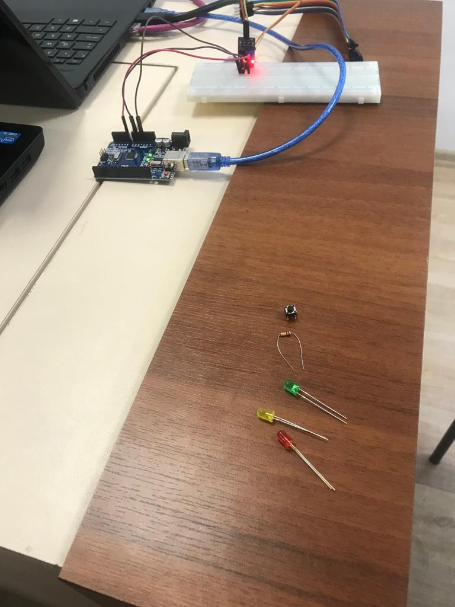
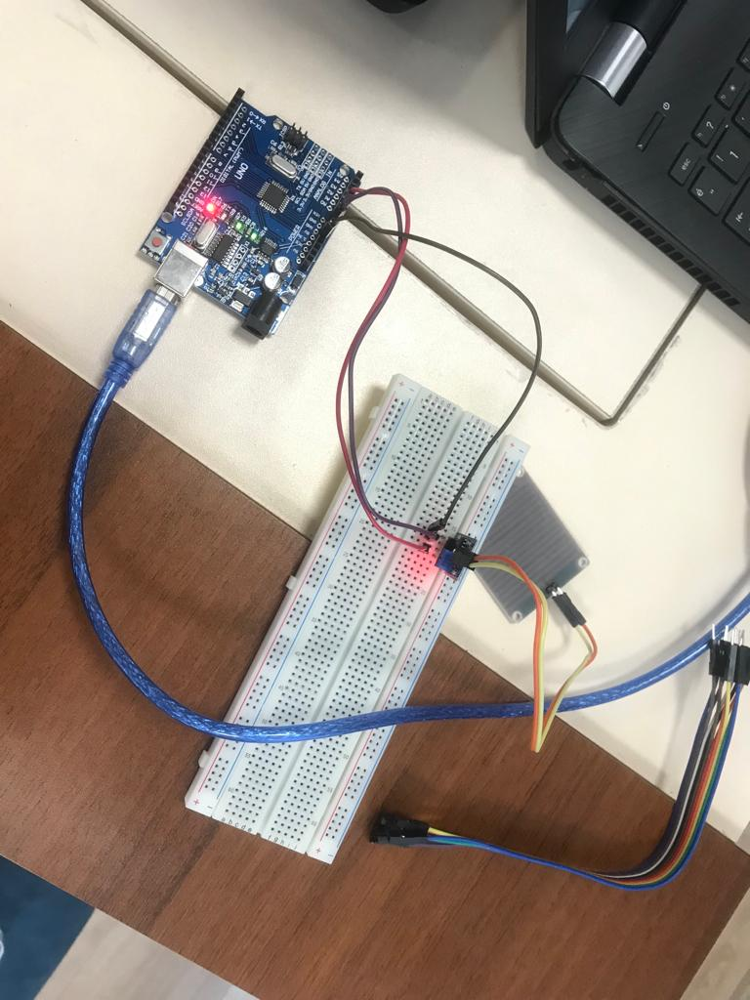
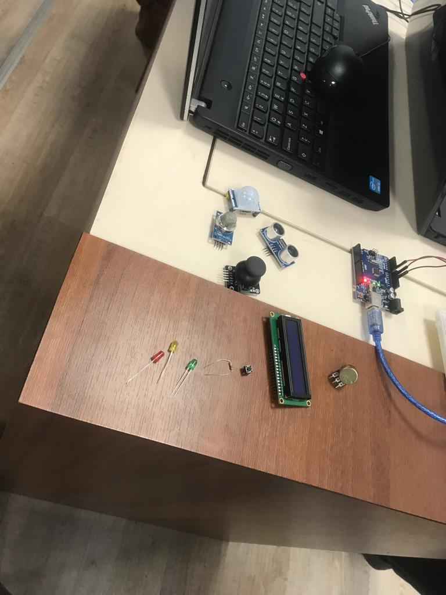
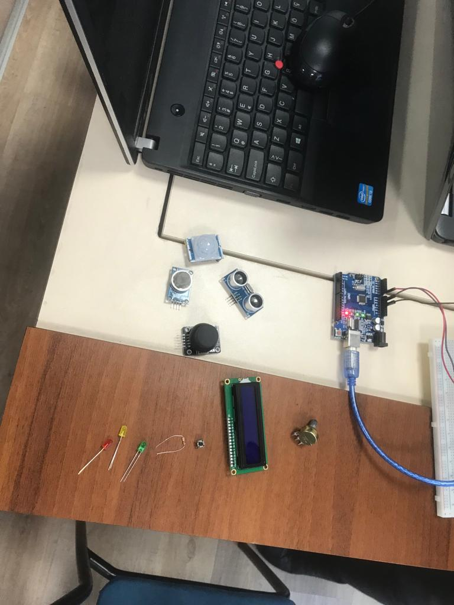
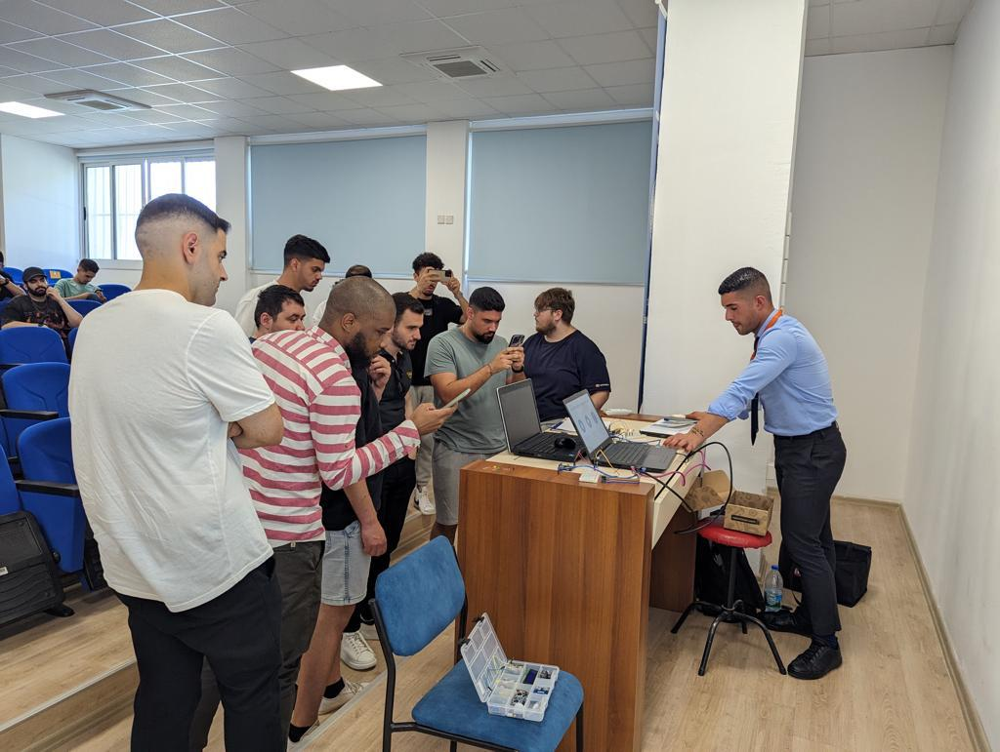

Seminar Summarys
IoT(Internet Of Things) are a network of physical objects, devices, vehicles, and other items embedded with sensors, software, and connectivity that enables them to collect and exchange data over the internet. We can also say it is about connecting everyday objects to the internet and enabling them to communicate and interact with each other, as well as with humans.
Arduino is an open-source electronics platform that consists of both hardware and software components. It is designed to simplify the process of creating interactive projects and prototyping electronic devices. Arduino boards are based on microcontrollers, which are small integrated circuits that contain a processor, memory, and input/output pins. With Mr Ali.Ulker we carried out a number of activities some of which are
Turning On LED Light With using button- .Connect the longer leg of the LED to a current-limiting resistor.
- Connect the other end of the resistor to a digital pin on the Arduino.
- Connect the shorter leg (cathode) of the LED to the ground pin on the Arduino.
- Connect one leg of the pushbutton to a digital pin on the Arduino .
- Connect the other leg of the pushbutton to the ground pin on the Arduino.
- Arduino board (such as Arduino Uno)
- Breadboard
- LED
- Resistor (usually around 220-330 ohms)
- Pushbutton
- Jumper wires
- Connect the VCC pin of the water sensor module to the 5V pin on the Arduino.
- Connect the GND pin of the water sensor module to the GND pin on the Arduino.
- Connect the OUT or SIG pin of the water sensor module to a digital pin on the Arduino.
- Arduino board (such as Arduino Uno)
- Breadboard
- Water sensor module (such as a water level sensor or a soil moisture sensor)
- Jumper wires
How to protect arduino devices
Network segmentation-Consider segmenting your network to isolate your Arduino devices from important systems or sensitive data. In the event of a breach, this offers an extra layer of protection and prohibits unauthorized access or lateral movement.
Use strong passwords-If your Arduino device has an administrative interface or network access, use strong, unique passwords. Use password management solutions to save and generate strong passwords instead of utilizing default credentials.
Employ secure coding techniques-To reduce vulnerabilities, use secure coding methods while programming your Arduino. Prevent buffer overflows, input validation difficulties, and other typical programming errors that attackers might exploit. To avoid injection attacks, thoroughly validate and sanitize inputs.
Implement authentication and authorizationAdd robust authentication techniques like as username/password or token-based authentication if your Arduino gadget interfaces to a network or cloud service. This prevents unauthorized people or devices from accessing and controlling your Arduino device..
Employ secure communication-When communicating with your Arduino device over a network or the internet, utilize safe protocols like as HTTPS or MQTT using TLS/SSL encryption. This helps to safeguard your data from eavesdropping and unwanted access.
Reflections-
In my own understanding, it is clear that cybersecurity is critical even for Arduino devices. Despite their simplicity and emphasis on physical computing, Arduino devices are vulnerable cybersecurity threats. Proactively protecting these devices helps to maintain the integrity and privacy of the data they manage. It is critical to secure communication channels, especially when delivering data through networks like the internet. The use of secure protocols and encryption techniques provides an additional degree of security against eavesdropping and unwanted access.
- 
- 
- 
- 
Devices
- 